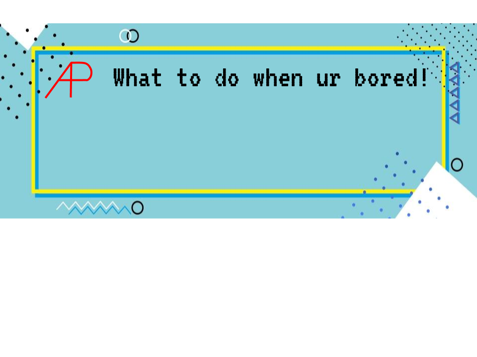
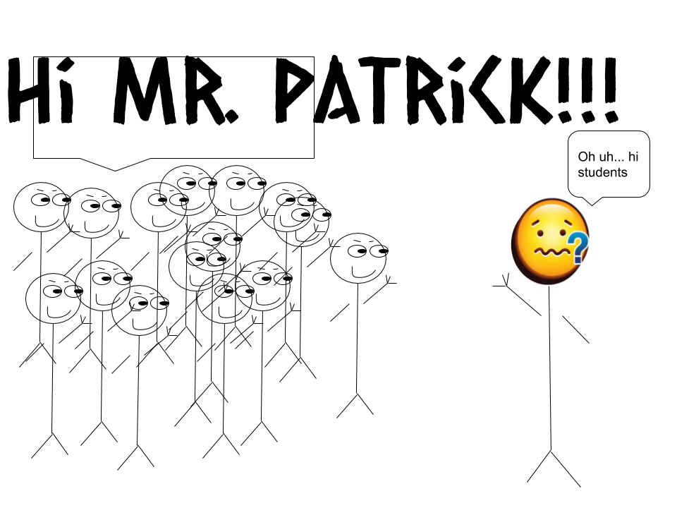
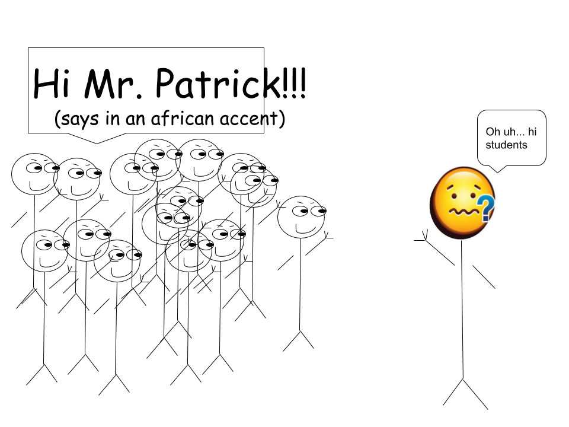
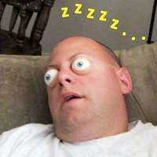

What to do when you're bored

staring prank
The first prank is to stare at the teacher. It works best if the whole class does it. The teacher would eventually freak out and if they accuse you of pranking just explain that you were paying attention.
accent prank

The second prank is to talk in strange accents. This prank also works best if you could manage to convince the whole class to do it. This prank should only be pulled off on teachers who wouldn’t accuse you of stereotyping.
creepy eyes prank

The third prank is to wear creepy eyes made of ping pong balls1. It also works best if the whole class participates. At first glance, the teacher would definitely freak out, but if they look closer they would definitely find it funny, if not hilarious.

class of 2025 prank
The fourth prank is a very memorable prank. Literally. The prank is to print a lot of business cards with the words class of 2025 on them, ideally, you should print at least 100, but the more you print the longer you would be remembered. Hide them in random places such as in ceiling tiles or behind library books. You would be remembered because for many years people would still be finding the cards. Again, the more cards the better.
voiceover prank
The fifth prank is to place a piece of paper next to the printer to make people think that the printer has a voiceover technology2. It would be absolutely hilarious to watch people shout at the printer, especially in our school, where the printers are in the library.
The one that never happened prank
The sixth prank very harmless but could cause you to roll on the floor laughing. Choose a victim and keep warning them that people are planning to prank them. Remind them many times and you could also discuss some pranks with a partner in front of the victim. This would scare the victim to death but after a while when they ask you why the prank hasn’t started yet explain that the people are still planning it. This prank is really great because you really don’t have to do anything and the victim can’t accuse you of pranking because you could explain that you were just being nice and warning them.
TV prank
This prank is great for parents, siblings, and roommates if they like to watch TV. Simply place a piece of clear tape on the remote control sensor and prepare some popcorn to watch the show. It would be funny to watch them continuously press the buttons but the TV doesn’t open.
Forever Typing Prank
This prank works for people who like texting. Send them a typing gif. They would think that you are typing a lot of stuff and they would wait and wait for the text that would never come.
Subscribing Prank
Change your account name, then send things to people to make them think they have subscribed to something3. This would drive them crazy. Example:
(On a texting app)
You: Thank you for subscribing to daily cat facts. We will be sending you fun facts about cats every day.
Friend: What
You: To unsubscribe, type .
Friend: giortudkdlsdogm892rjioetry39ioth3osd9t9elfghsud
You:
Friend: UNsubscribe UnSubscriBE uNSuBSCribE
You: To unsubscribe, type
Friend: hiodfjvg3rthuiodgjdsgh9oghsjkdwjl4gjhlg
You: Thank you for upgrading daily cat facts to premium. We will be sending you facts more frequently.
Friend: Urghhh
You: Did you know that cats could rotate their ears 180 degrees? Meow!
Friend: Unsubscribe
You: To unsubscribe, type your favorite animal is the <______>.
Friend: Dog
You: Wrong. Your favorite animal is the .
You: Did you know that the word for people who like cats is ailurophile?
Friend: Stop this whoever you are!!!!!
You: To unsubscribe, type your favorite animal is the <______>.
Friend: Cat
You: Wrong. You said your favorite animal is the .
You: Did you know that the first cat was sent into space in 1963?
You: To unsubscribe, type .